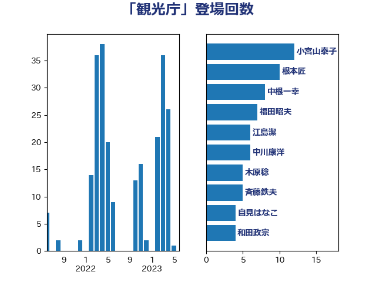

単語「観光庁」

| 小宮山泰子 | 立憲民主党 | 12 回 |
| 根本匠 | 自由民主党 | 10 回 |
| 中根一幸 | 自由民主党 | 8 回 |
| 福田昭夫 | 立憲民主党 | 7 回 |
| 江島潔 | 自由民主党 | 6 回 |
| 中川康洋 | 公明党 | 6 回 |
| 木原稔 | 自由民主党 | 5 回 |
| 斉藤鉄夫 | 公明党 | 5 回 |
| 自見はなこ | 自由民主党 | 4 回 |
| 和田政宗 | 自由民主党 | 4 回 |
| 伴野豊 | 立憲民主党 | 4 回 |
| 長浜博行 | 無所属 | 3 回 |
| 鈴木敦 | 国民民主党 | 3 回 |
| 竹谷とし子 | 公明党 | 3 回 |
| 河野太郎 | 自由民主党 | 3 回 |
| 武井俊輔 | 自由民主党 | 3 回 |
| 山本佐知子 | 自由民主党 | 3 回 |
| 古川元久 | 国民民主党 | 3 回 |
| 佐藤英道 | 公明党 | 3 回 |
| 伊波洋一 | 無所属 | 3 回 |
| 鶴保庸介 | 自由民主党 | 2 回 |
| 長島昭久 | 自由民主党 | 2 回 |
| 西村康稔 | 自由民主党 | 2 回 |
| 玉木雄一郎 | 国民民主党 | 2 回 |
| 浜口誠 | 国民民主党 | 2 回 |
| 池下卓 | 日本維新の会 | 2 回 |
| 永井学 | 自由民主党 | 2 回 |
| 橋本岳 | 自由民主党 | 2 回 |
| 梅村聡 | 日本維新の会 | 2 回 |
| 小熊慎司 | 立憲民主党 | 2 回 |
| 城内実 | 自由民主党 | 2 回 |
| 住吉寛紀 | 日本維新の会 | 2 回 |
| 三宅伸吾 | 自由民主党 | 2 回 |
| 高木陽介 | 公明党 | 1 回 |
| 長谷川岳 | 自由民主党 | 1 回 |
| 長妻昭 | 立憲民主党 | 1 回 |
| 遠藤良太 | 日本維新の会 | 1 回 |
| 赤羽一嘉 | 公明党 | 1 回 |
| 西野太亮 | 自由民主党 | 1 回 |
| 蓮舫 | 立憲民主党 | 1 回 |
| 笹川博義 | 自由民主党 | 1 回 |
| 窪田哲也 | 公明党 | 1 回 |
| 秋葉賢也 | 自由民主党 | 1 回 |
| 福重隆浩 | 公明党 | 1 回 |
| 福島伸享 | 無所属 | 1 回 |
| 石田真敏 | 自由民主党 | 1 回 |
| 石川昭政 | 自由民主党 | 1 回 |
| 渡辺猛之 | 自由民主党 | 1 回 |
| 渡辺周 | 立憲民主党 | 1 回 |
| 渡辺博道 | 自由民主党 | 1 回 |
| 河西宏一 | 公明党 | 1 回 |
| 枝野幸男 | 立憲民主党 | 1 回 |
| 村田享子 | 立憲民主党 | 1 回 |
| 杉本和巳 | 日本維新の会 | 1 回 |
| 新妻秀規 | 公明党 | 1 回 |
| 後藤茂之 | 自由民主党 | 1 回 |
| 平山佐知子 | 無所属 | 1 回 |
| 平口洋 | 自由民主党 | 1 回 |
| 市村浩一郎 | 日本維新の会 | 1 回 |
| 川田龍平 | 立憲民主党 | 1 回 |
| 岸田文雄 | 自由民主党 | 1 回 |
| 岡田直樹 | 自由民主党 | 1 回 |
| 山本博司 | 公明党 | 1 回 |
| 山下芳生 | 日本共産党 | 1 回 |
| 室井邦彦 | 日本維新の会 | 1 回 |
| 吉田豊史 | 無所属 | 1 回 |
| 原口一博 | 立憲民主党 | 1 回 |
| 勝部賢志 | 立憲民主党 | 1 回 |
| 中野英幸 | 自由民主党 | 1 回 |
| 三上えり | 立憲民主党 | 1 回 |
| おおつき紅葉 | 立憲民主党 | 1 回 |